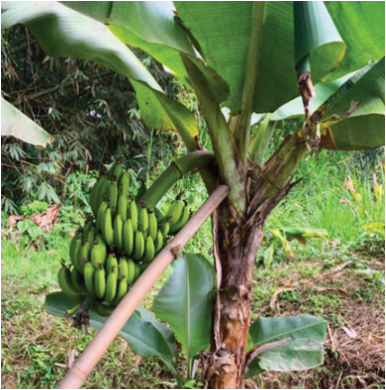

planting materials. To prevent sprouting, insert a peg into the growing point.
Start this process two months after planting and repeat every 45 days until the
plant flowers.


Figure 2.10: De-suckering in a banana field
Propping

Propping supports banana plants
with fruit bunches to prevent them
from falling. A pole is placed
under the bunch, taking care not to
damage the fruit (Figure 2.11). Tall
banana varieties, such as Grand
Nain, Williams, Valery, Giant
Cavendish, and the FHIA series,
require propping.
Figure 2.11: Propping in banana
De-leafing
De-leafing in banana plants involves removing old, damaged, or diseased leaves
to improve plant growth and health. This process improves photosynthesis by
allowing better sunlight penetration to healthy leaves and fruit bunches. It also
prevents the spread of fungal and bacterial infections.